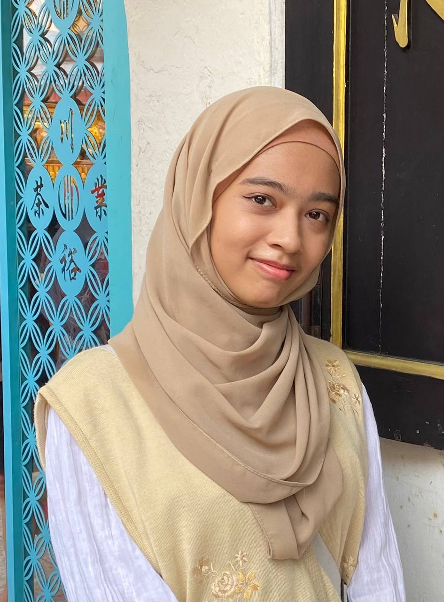

About Me
I am a student from New Media Communication and Contentpreneurship (MC111), UiTM Melaka. I have experience in various medias such as video editing, graphic design, web design, animation, and content creating! I aim to learn new things related to media. I will display my past works here, including personal works!
Presentation and teamwork wise, I can be very approachable! For group work, I am active at giving opinions on building or improving an idea, giving feedback and also confident at doing presentations. I am also good at writing.
